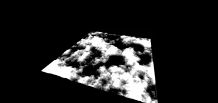

3D > Material & Texture > Noise Texture > SimplexTexture
Custom SimplexTexture - Displacement - RedGPU WebGPU Example
Example applying displacement effects using Simplex Noise.
심플렉스 노이즈를 활용하여 변위(Displacement) 효과를 주는 예제입니다.

3D > Material & Texture > Noise Texture > SimplexTexture
Example applying displacement effects using Simplex Noise.
심플렉스 노이즈를 활용하여 변위(Displacement) 효과를 주는 예제입니다.
